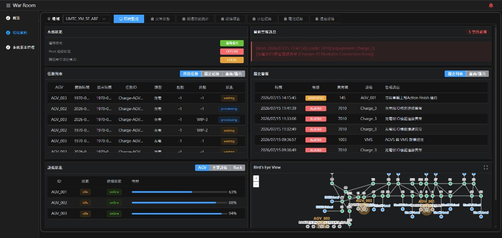
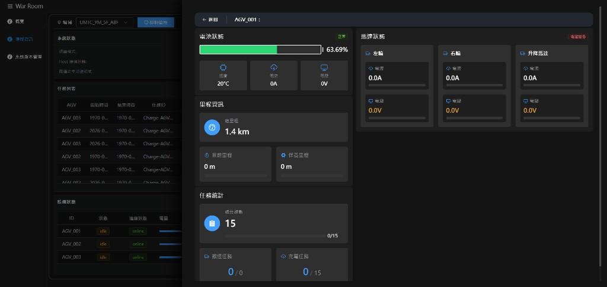
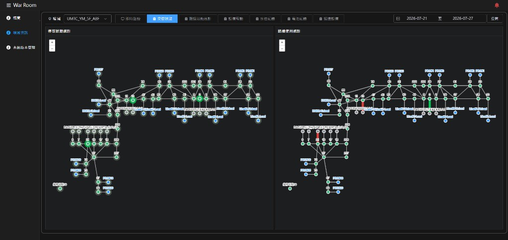
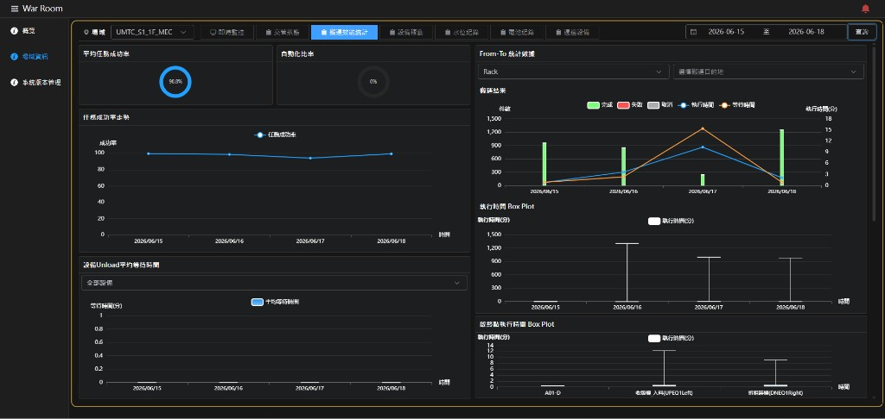
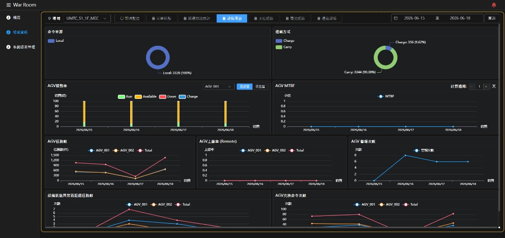
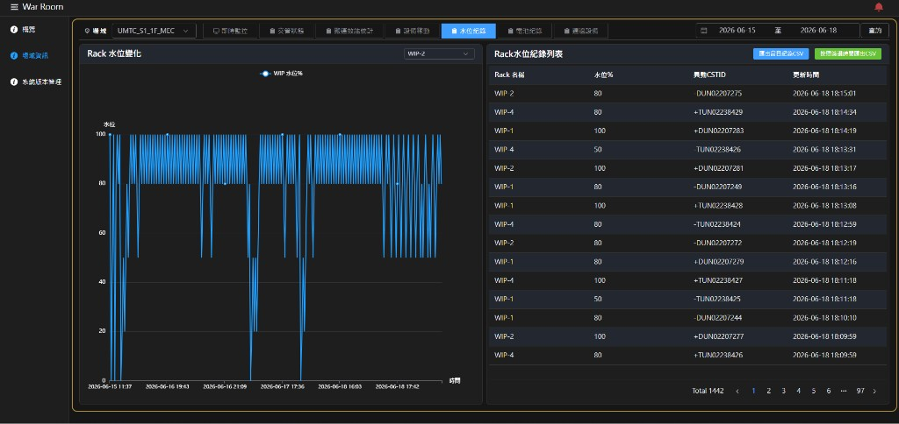
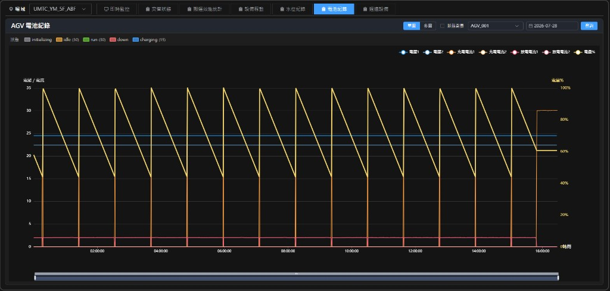
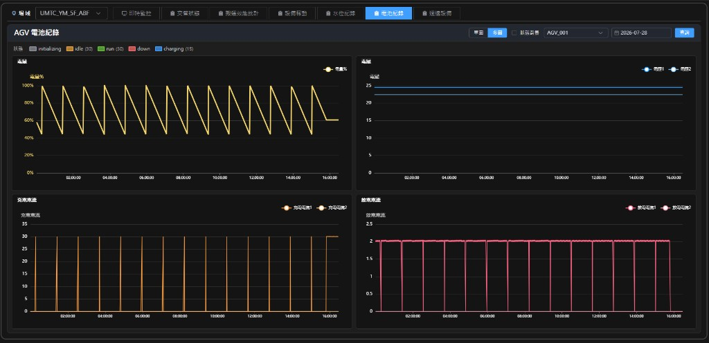
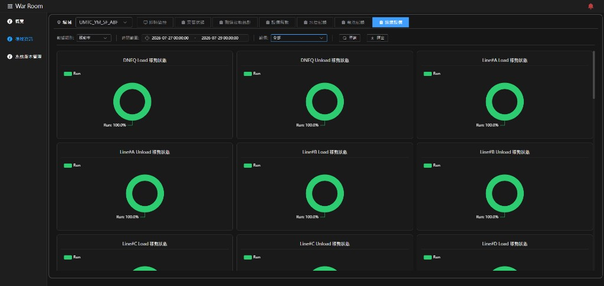

War Room 前端操作說明
本文件依目前前端畫面與實際操作流程整理，並以系統真實截圖作為範例圖片。
適用範圍：概覽、場域資訊各頁籤、設備詳情、水位 / 電池紀錄、週邊設備與系統版本管理。
目錄
- 系統導覽
- 即時監控
- 設備狀態詳情（AGV）
- 交管狀態
- 搬運效能統計
- 設備稼動
- 水位紀錄
- 電池紀錄
- 週邊設備
- 建議操作流程
1. 系統導覽
左側選單
- 概覽：查看各樓層 / 區域總覽。
- 場域資訊：進入單一場域的即時與統計頁籤。
- 系統版本管理：查看派車系統與車輛版本。
- 點擊左上選單圖示可展開 / 收合側邊欄。
- 右上鈴鐺可控制告警聲音（正常 / 永久靜音）。
- 在場域資訊頁，可先用「場域」下拉選單切換目標場域。
2. 即時監控

圖 2-1｜場域資訊 > 即時監控
畫面說明
- 系統狀態：確認運轉模式、Host 連線、命令派送模式。
- 任務列表：查看目前 / 歷史任務，可查詢與匯出。
- 設備狀態：查看 AGV / 主設備 / Rack；可切換類型。
- 當前警報：顯示尚未處理的警報。
- 歷史警報：查詢與匯出歷史告警。
- 鳥瞰圖：查看場域路線與車輛位置。
- 左側選單進入「場域資訊」。
- 選擇目標場域。
- 點選「即時監控」頁籤。
- 若有紅框警報，先檢查「當前警報」與設備狀態。
- 點選 AGV 或 Rack，開啟設備詳情。
3. 設備狀態詳情（AGV）

圖 3-1｜點選 AGV 後開啟的設備詳情抽屜
畫面說明
- 電池狀態：電量百分比、溫度、電流、電壓。
- 里程資訊：總里程、目前里程、保養里程。
- 任務統計：搬運任務與充電任務完成數。
- 馬達狀態：左輪、右輪、升降馬達電流 / 電壓；異常時會顯示警告。
- 在「即時監控」設備狀態區點選目標 AGV。
- 於右側抽屜查看電池、里程、任務與馬達資訊。
- 完成後點擊「返回」關閉抽屜。
4. 交管狀態

圖 4-1｜場域資訊 > 交管狀態
畫面說明
- 停等狀態統計（左）：以地圖節點顏色呈現停等熱點。
- 路線使用統計（右）：以路線顏色呈現路徑使用頻率。
- 切換至「交管狀態」頁籤。
- 於右上選擇日期區間。
- 點擊「查詢」。
- 觀察左圖停等熱點與右圖繁忙路線，優先關注高亮路段 / 節點。
5. 搬運效能統計

圖 5-1｜場域資訊 > 搬運效能統計
畫面說明
- 平均任務成功率 / 自動化比率：快速掌握整體績效。
- 任務成功率走勢：觀察每日成功率變化。
- 設備 Unload 平均等待時間：可切換全部設備或單一設備。
- From-To 統計數據：依起點 / 終點查看完成、失敗、取消與時間。
- 執行時間 Box Plot：查看執行時間分布。
- 切換至「搬運效能統計」。
- 設定日期區間後點擊「查詢」。
- 調整 Unload 設備與 From-To 條件，觀察對應圖表變化。
- 若需看歷史路線，先載入任務資料並勾選任務，於地圖疊加路徑。
6. 設備稼動

圖 6-1｜場域資訊 > 設備稼動
畫面說明
- 命令來源 / 運載方式：圓餅圖呈現任務組成。
- AGV 稼動率：可切換「依狀態」或「依里程」。
- AGV MTBF：可調整計算週期天數。
- 任務數、上線率、警報次數、拒絕任務數、交換命令次數：用於追蹤稼動與穩定度。
- 切換至「設備稼動」。
- 設定日期區間並查詢。
- 切換稼動率顯示方式與 MTBF 計算週期。
- 對照警報次數與拒絕任務數，判斷異常集中日期。
7. 水位紀錄

圖 7-1｜場域資訊 > 水位紀錄
畫面說明
- Rack 水位變化：以折線圖顯示指定 Rack 水位走勢，可用下拉切換 WIP。
- Rack 水位紀錄列表：顯示 Rack 名稱、水位%、異動 CSTID、更新時間。
- 支援「匯出當日紀錄 CSV」與「按照篩選時間匯出 CSV」。
- 切換至「水位紀錄」。
- 設定日期區間後點擊「查詢」。
- 於左側下拉選擇要觀察的 Rack / WIP。
- 於右側列表確認異動明細，必要時匯出 CSV。
8. 電池紀錄

圖 8-1｜電池紀錄（單圖模式）

圖 8-2｜電池紀錄（多圖模式）
畫面說明
- 可切換 單圖 / 多圖。
- 可勾選 狀態背景，依 initializing / idle / run / down / charging 顯示底色。
- 可選擇 AGV 與日期後查詢。
- 單圖：同圖比較電量、電壓、充放電電流。
- 多圖：分別顯示電量、電壓、充電電流、放電電流。
- 切換至「電池紀錄」。
- 選擇 AGV 與日期，點擊「查詢」。
- 依需求切換「單圖」或「多圖」。
- 勾選「狀態背景」後，對照電量升降與狀態區段（例如充電時電量是否上升）。
- 電量呈鋸齒狀下降再上升，通常代表正常放電與充電循環。
- 若長時間 charging 但電量不升，優先檢查充電設備。
- 若低電量區段落在 down，優先追查異常原因。
9. 週邊設備

圖 9-1｜場域資訊 > 週邊設備
畫面說明
- 數據類別：可切換「稼動率」或「警報」。
- 時間範圍：設定查詢起訖時間。
- 稼動率模式下，各設備會以圓餅圖顯示狀態比例（例如 Run 100%）。
- 警報模式下可再設定其他條件並匯出。
- 切換至「週邊設備」。
- 選擇數據類別與時間範圍。
- 若查警報，可開啟「其他條件」輸入設備名稱、異常碼、描述關鍵字。
- 點擊「查詢」；需要時點擊「匯出」。
10. 建議操作流程
- 先從「概覽」確認哪個場域有警報或異常。
- 雙擊場域卡片，進入「場域資訊」。
- 在「即時監控」確認系統狀態、任務與當前警報。
- 點選異常 AGV / Rack，查看設備詳情。
- 若需歷史分析，再切到交管狀態、搬運效能統計、設備稼動、水位紀錄或電池紀錄。
- 若需週邊設備狀態，進入「週邊設備」查詢與匯出。